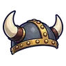
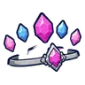

ดอกแม่พิษ
มอนธาตุพิษ Lv 56–74
เจอที่
| แมพ | โซน | Lv | ภูมิภาค |
|---|---|---|---|
| รากต้นแม่พิษ | 56–62 | แดนใต้สีแดง | |
| รากต้นแม่พิษ | ใต้รากแม่พิษ | 62–64 | แดนใต้สีแดง |
| ถ้ำรากแม่พิษ B2 · หัวใจ | 70–74 | แดนใต้สีแดง | |
| หมู่บ้านคนเก็บพิษ | ลานต้มพิษ | 64–66 | แดนใต้สีแดง |
| ทุ่งพืชกินแมลงยักษ์ | 56–62 | แดนใต้สีแดง | |
| ทุ่งพืชกินแมลงยักษ์ | หม้อพืชยักษ์ | 62–64 | แดนใต้สีแดง |
| ป่ารังไหมพิษ | 56–62 | แดนใต้สีแดง | |
| ป่ารังไหมพิษ | ต้นรังไหมยักษ์ | 62–64 | แดนใต้สีแดง |
| หอรากมืด (Dark Root) | ทะเลยางดำ | 81–90 |
ค่าสถานะตามเลเวล
| Lv | HP | ATK | DEF | MDEF | EXP | Job |
|---|---|---|---|---|---|---|
| 56 | 13,588 | 72–109 | 16 | 22 | 76 | 57 |
| 65 | 20,475 | 85–128 | 18 | 25 | 88 | 66 |
| 74 | 29,507 | 100–150 | 21 | 29 | 99 | 74 |
ตีด้วยธาตุไหนดี
แรงขึ้น: —
เบาลง: มืด ×0.5 อมตะ ×0.5 พิษ ×0
วัตถุดิบที่ดรอป
| ของ | โอกาส | |
|---|---|---|
| เกสรแม่พิษ | 55% | 1 ชิ้น (15% ได้ 2) |
อุปกรณ์ที่ดรอป (5)
| ของ | โอกาส |
|---|---|
| 0.12% | |
 หมวกเขาเหล็กนักรบเหนือ | 0.08% |
 มงกุฎคริสตัลลอย | 0.08% |
| 0.06% | |
| 0.06% |
สกิล
หลบ (Lv 25+) · หลบ (Lv 60+) · วาร์ป (Lv 60+)